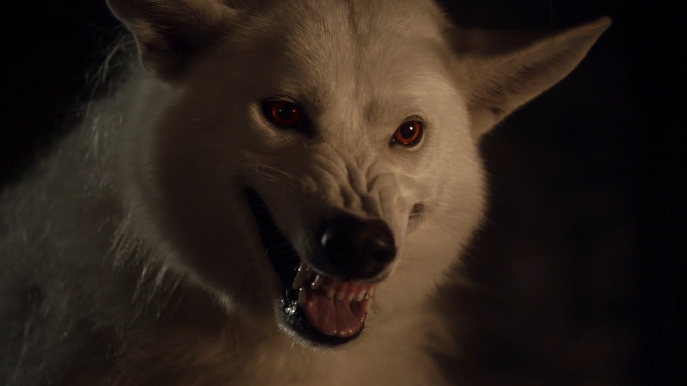

1ª TEMPORADA
Depois de cinco filhotes de lobo gigante serem encontrados por Robb Stark e levados, um para cada criança Stark, Jon Snow encontra um filhote de lobo gigante albino, o menor e mais novo da ninhada. Theon Greyjoy reconhece que o "lobo é como a neve", fazendo alusão ao sobrenome de Jon, Snow, que em inglês significa neve. Jon Snow leva Fantasma com ele quando ele se junta à Patrulha da Noite e usa-o para ameaçar Rast no meio da noite, avisando-o que "ninguém toca Sam". Fantasma fica em cima de Rast, rosnando. Quando Jon está confinado nas celas por ameaçar Sor Alliser Thorne, Fantasma começa a choramingar em frente à porta no meio da noite. Jon entende que algo está errado e segue o lobo para os aposentos do Senhor Comandante. De repente, a porta se fecha e Fantasma fica preso do lado de fora do quarto. Jon encontra-se com Othor, ressuscitado como uma criatura. Jon o mata e salva a vida do Senhor Comandante.[18] Quando Jon tenta fugir e se juntar a Robb em sua guerra contra os Lannisters, Fantasma deixa ele, mas retorna para Jon quando o mesmo volta para a Muralha
2ª TEMPORADA
Fantasma segue Jon Snow e o resto da Patrulha da Noite quando eles se aventuram mais profundamente no território dos selvagens. Quando a Patrulha da Noite se hospeda na Fortaleza de Craster, Gilly fica assustada com Fantasma quando o lobo gigante albino se aproxima dela, atraído por um coelho morto que ela está segurando. Samwell Tarly, que já tinha notado, manda Fantasma embora.
Mais tarde, quando Jon pede para se juntar ao grupo de Qhorin Meia-Mão, Fantasma os segue, mas enquanto eles viajam, Fantasma se separa do grupo e, finalmente, desaparece, apesar dos apelos de Jon para Fantasma ficar com eles.

3ª TEMPORADA
Após o ataque dos Caminhantes Brancos contra a Patrulha da Noite no Punho dos Primeiros Homens, Fantasma salva Sam de uma Criatura, dando ao Senhor Comandante Jeor Mormont a chance de destruir a criatura com fogo. Fantasma acompanha os homens da Patrulha da Noite sobreviventes até a Fortaleza de Craster, mas se recusa a entrar na mesma. Ao contrário, ele volta para se aventurar na Floresta Assombrada.
4ª TEMPORADA
Fantasma foi capturado e enjaulado pelo traidores da Patrulha. Uma noite Karl ordena a Rast que ele alimente Fantasma, a quem ele se refere como "a besta". Rast provoca Fantasma, derramando água na frente da gaiola. Quando Bran entra na mente de Verão ele vê Fantasma e corre em direção a ele, mas cai em uma armadilha. Depois de escapar da Fortaleza de Craster, Bran Stark e seus companheiros libertam Fantasma e Verão. Fantasma permanece nas proximidades e mata Rast quando ele foge do massacre de seus companheiros amotinados. Depois disso, Fantasma final se encontra com Jon Snow, após os dois estarem separados há mais de um ano. Eles chegam juntos em Castelo Negro, porém Alliser Thorne ordena que Jon prenda Fantasma. Durante a batalha de Castelo Negro, Jon manda Samwell libertar Fantasma para que ele possa ajudar a matar os selvagens que estão invadindo o castelo. Imediatamente, Fantasma ataca um guerreiro Thenn e rói sua garganta, até que ele morra.
